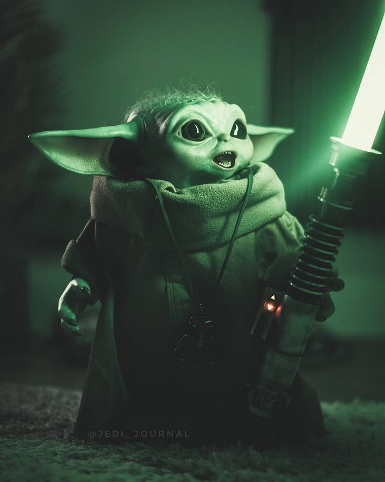

Grogu

Din Grogu, également appelé Grogu, l'Enfant, l'Objectif, l'Orphelin, ou encore la Proie, était un Initié de l'Ordre Jedi issu de la même espèce que le Grand Maître Yoda. Élevé sous la République, il survécut à la Grande Purge Jedi et dut se cacher du terrible Empire Galactique. Des décennies plus tard, il entra sous la garde d'un Mandalorien dénommé Din Djarin. À ses côtés, il fut protégé du Moff Gideon et retrouva ses semblables Jedi. Enfin il trouva un nouveau Maître, Luke Skywalker.
Durant l'Ère Républicaine, Grogu fut découvert comme étant sensitif et fut formé à la voie des Jedi. Au Temple Jedi de Coruscant, il fut entraîné par les plus grands Maîtres tels que Yoda, issu de la même espèce. Vieillissant à un rythme très lent, Grogu assista à de nombreux évènements. Notamment il vécut durant la Guerre des Clones et survécu à l'Ordre 66, marquant l'avènement de l'Empire Galactique. Laissé pour compte et recherché activement par les Sith, le jeune enfant fut caché des impériaux pendant plusieurs décennies. Finalement la Bataille de Jakku eut lieu, marquant la chute du régime impérial et l'aube de la Nouvelle République. Quatre ans plus tard, Grogu était retenu à un campement de mercenaires sur Arvala-7. Toujours recherché par les derniers impériaux, il fut capturé par un chasseur de primes travaillant pour leur compte. Cependant, après avoir compris quel sort lui était réservé, ce Mandalorien dénommé Din Djarin choisit de le garder sous sa protection.
 Cherchant un abri dans la Bordure Extérieure, les deux furent pourchassés sans relâche par les impériaux. Ce faisant, Djarin choisit de se débarrasser d'eux. Sur Nevarro, il affronta le vestige impérial du Moff Gideon avec ses quelques alliés. Pendant cette bataille, il apprit que Grogu maîtrisait la Force et que son destin se trouvait avec ses semblables, les Jedi. Une fois Gideon vaincu, il partit à la recherche de la famille du jeune enfant. Pendant plusieurs semaines, les deux sillonnèrent la galaxie. D'abord en contact avec des Mandaloriens, ils apprirent de Bo-Katan Kryze, une ancienne Mand'alor, qu'une Jedi vivait sur Corvus. Sur cette planète, ils rencontrèrent Ahsoka Tano, mais celle-ci refusa d'entraîner Grogu. D'après-elle le lien entre Djarin et l'enfant était trop puissant. Toutefois elle leur conseilla de se rendre sur Tython, où d'autres Jedi se trouvaient peut-être. Là, Grogu entra dans une méditation intense lui permettant d'être repéré par ses semblables. Malheureusement il fut à nouveau capturé par Gideon, ayant survécu à sa défaite. Étudié par le Moff pendant plusieurs jours, il fut enfin sauvé par Djarin, accompagné de quelques Mandaloriens. Puis un Jedi vint. Luke Skywalker, à la tête de l'Ordre Jedi ressuscité, récupéra Grogu et promit de l'entraîner à maîtriser son potentiel.
{kind=link}